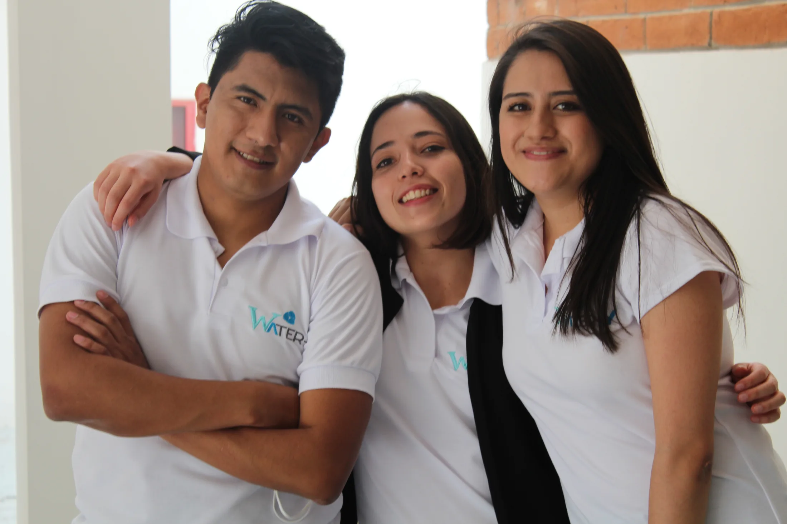
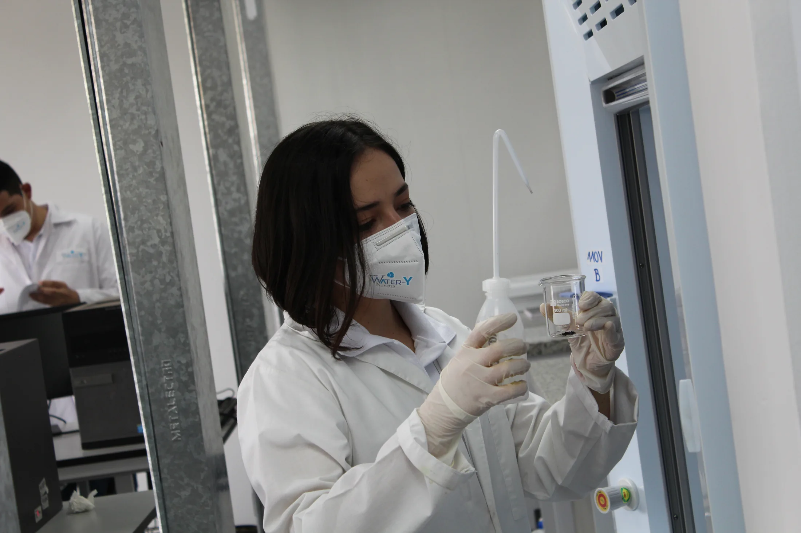
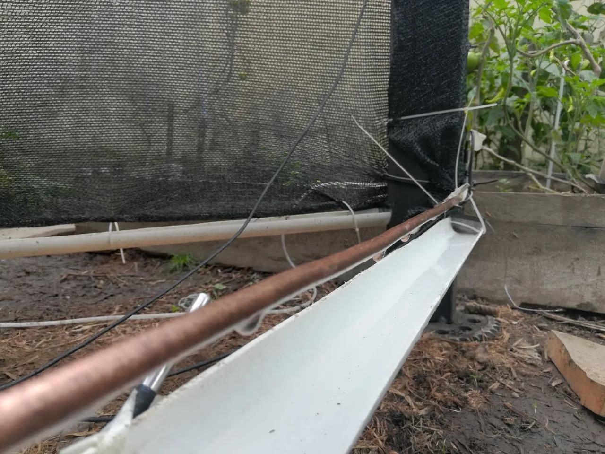
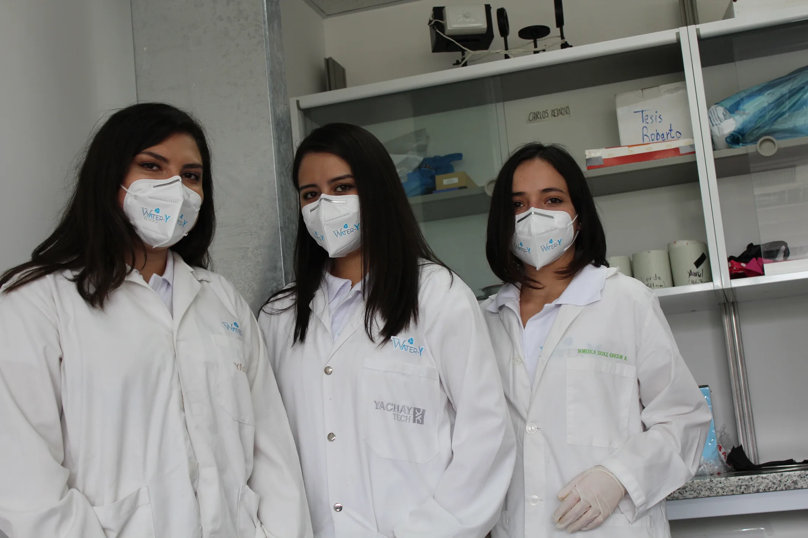

Water-Y
A scientific response to water scarcity: improve the way atmospheric water harvesting systems condense humidity, then bring the solution closer to the people who need it.
Water is everywhere. Access is not.
Two billion people lack access to safe drinking water. Climate change intensifies water scarcity, while many traditional systems remain costly and energy inefficient. Water-Y addresses these challenges with a science-based approach designed to be scalable, low-energy, and adapted to community realities.

Make condensation work harder.
Water-Y uses nanotechnology coatings on condensation surfaces to dramatically improve atmospheric water collection systems—helping communities in arid and vulnerable regions gain access to clean, sustainable water.
Born from scientific research and field needs, the innovation brings efficiency, affordability, and sustainability into one solution.
From the bench
to the machine.
The Water-Y team is working toward solutions that can be tested, understood, and maintained in the places where they are needed.
A short field video of the atmospheric water machine in operation. The audio has been removed so the image can stand on its own.

More water, without more energy.
Water-Y is optimized for atmospheric water generators. Its surface treatment is designed to reduce energy loss through smarter condensation and remain adaptable to coastal and tropical climates.
Research becomes
infrastructure.
The next chapter is not only technical. It is about how the technology meets food production, public needs, local technicians, and durable community ownership.
Scientific and technical development of the nanotechnology coating with Yachay Tech University.
Prototype development and field testing with equipment designed for real operating conditions.
Produce coating materials at scale, install pilots in schools and farming zones, and train local communities and technicians.
Continue research to improve performance, affordability, and replicability.
“Water should be a point of departure for opportunity—not a barrier to it.”
Water-Y · Garzón InstituteBuilt across
disciplines.
Water-Y grows through a network of university partners, accelerators, development institutions, and community collaborators.
Ready for the next pilot.
Water-Y is seeking funding and partners to scale its pilot implementations in Ecuador, Latin America, and selected areas of Africa. The estimated budget for this next phase is $150,000.
Discuss collaboration ↗